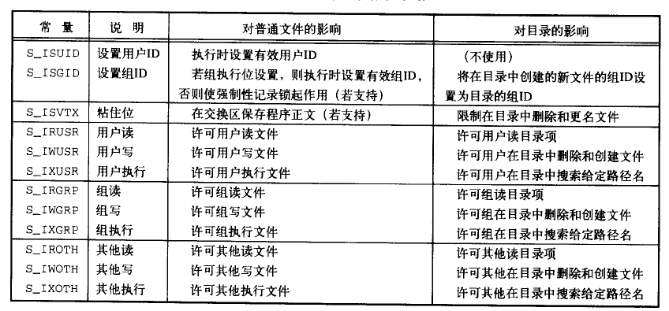

使用以下函数可以获取一个指定文件的相关信息：
#include <sys/types.h>
#include <sys/stat.h>
#include <unistd.h>
int stat(const char *path, struct stat *buf);
int fstat(int fd, struct stat *buf);
int lstat(const char *path, struct stat *buf);
stat 取出 path 文件的相关信息，并将它保存到 buf 中。
lstat 和 stat 类似，唯一的不同是，如果 path 是一个符号链接（symbolic link），
那么 lstat 返回的是链接文件的信息，而不是链接所指向的文件的信息。
fstat 和 stat 类似，唯一的不同是， fstat 接受的参数是文件描述符 fd ，而不是文件的路径。
以上三个函数在执行成功时，返回 0 ，失败时，返回 -1 ，并将错误原因设置到 errno 。
除了使用 stat 和 lstat 对文件进行查看时，需要对路径上的所有文件夹有执行（查找）权限之外，
调用这些函数无须任何其他权限。
举个例子，要成功调用 stat("/foo/bar/spam", buf); ，必须对 foo 和 bar 文件夹都拥有执行权限。
stat 等三个函数将文件的信息保存到一个 struct stat 类型的结构中，这个结构包含以下域：
struct stat {
dev_t st_dev; // 包含文件的设备的 ID
ino_t st_ino; // i-node 号码
mode_t st_mode; // 文件的访问权限、以及文件的类型
nlink_t st_nlink; // 硬链接（hard links）的数量
uid_t st_uid; // 拥有者的用户 ID
gid_t st_gid; // 拥有者的组 ID
dev_t st_rdev; // 设备 ID （只在文件是特殊文件时使用）
off_t st_size; // 文件的大小（以字节计算）
blksize_t st_blksize; // 推荐 I/O 操作对文件使用的块大小
blkcnt_t st_blocks; // 文件占用的块数量（每块 512 字节）
time_t st_atime; // 文件数据最后访问时间（例如 read）
time_t st_mtime; // 文件数据最后修改时间（例如 write）
time_t st_ctime; // 文件的 i 节点最后一次被修改的时间（例如 chmod）
};
以下分多个小节介绍各个域的相关信息。
stat.st_mode 属性包含了文件的访问权限，以及文件的类型。
文件的类型可以是：
sys/stat.h 文件提供了一组宏，通过它们对 stat.st_mode 的值进行判断，可以获得文件的类型：
| 宏 | 进行的检查 |
|---|---|
S_ISREG(m) |
普通文件？ |
S_ISDIR(m) |
目录？ |
S_ISBLK(m) |
块设备？ |
S_ISCHR(m) |
字符串设备？ |
S_ISFIFO(m) |
FIFO 设备？ |
S_ISSOCK(m) |
套接字？ |
S_ISLNK(m) |
符号链接？ |
以下程序读入一个文件路径，并打印该文件的类型：
// 4-print-type.c
#include <sys/stat.h>
#include <stdio.h>
int main(int argc, char *argv[]) {
if (argc != 2) {
printf("usage: ./a.out filepath\n");
return 1;
}
char *filepath = argv[1];
struct stat file;
if (stat(filepath, &file) == -1) {
printf("get file %s info fail\n", filepath);
return 2;
}
if (S_ISREG(file.st_mode)) {
printf("regular\n");
}
else if (S_ISDIR(file.st_mode)) {
printf("directory\n");
}
else if (S_ISCHR(file.st_mode)) {
printf("character device\n");
}
else if (S_ISBLK(file.st_mode)) {
printf("block device\n");
}
else if (S_ISFIFO(file.st_mode)) {
printf("FIFO\n");
}
else if (S_ISLNK(file.st_mode)) {
printf("symbolic link\n");
}
else if (S_ISSOCK(file.st_mode)) {
printf("socket\n");
}
else {
printf("unknow type\n");
}
return 0;
}
执行结果：
$ ./4-print-type.out /dev/null
character device
$ ./4-print-type.out /dev/sda
block device
$ ./4-print-type.out /
directory
$ ./4-print-type.out 4-print-type.c // 纯文本
regular
$ ./4-print-type.out 4-print-type.out // 二进制
regular
除了使用 S_ISXXX 宏之外，还可以用 st_mode 属性和 S_IFMT 屏蔽位做二进制求并计算，
然后通过计算结果判断文件的类型：
st_mode & S_IFMT 的值 |
文件类型 |
|---|---|
S_IFSOCK |
套接字 |
S_IFLNK |
符号链接 |
S_IFREG |
普通文件 |
S_IFBLK |
块设备 |
S_IFDIR |
文件夹 |
S_IFCHR |
字符设备 |
S_IFIFO |
FIFO |
除了 S_IFIFO 之外，表中的常量 S_IFXXX 和前面的宏命名 S_ISXXX 是保持一致的。
实际上 S_ISXXX 宏就是用这些位运算来定义的。
以下是使用这一判断方式的程序：
// 4-printf-type-2.c
#include <sys/stat.h>
#include <stdio.h>
int main(int argc, char *argv[]) {
if (argc != 2) {
printf("usage: ./a.out filepath\n");
return 1;
}
char *filepath = argv[1];
struct stat file;
if (stat(filepath, &file) == -1) {
printf("get file %s info fail\n", filepath);
return 2;
}
switch (file.st_mode & S_IFMT) {
case S_IFREG:
printf("regular\n");
break;
case S_IFDIR:
printf("directory\n");
break;
case S_IFCHR:
printf("character device\n");
break;
case S_IFBLK:
printf("block device\n");
break;
case S_IFIFO:
printf("FIFO\n");
break;
case S_IFLNK:
printf("symbolic link\n");
break;
case S_IFSOCK:
printf("socket\n");
break;
default:
printf("unknow type\n");
}
return 0;
}
执行结果：
$ ./4-print-type-2.out /dev/sda
block device
$ ./4-print-type-2.out /dev/null
character device
$ ./4-print-type-2.out /
directory
$ ./4-print-type-2.out 4-print-type-2.out
regular
$ ./4-print-type-2.out 4-print-type-2.c
regular
文件所有者的用户 ID 和组 ID 分别保存在 st_uid 和 st_gid 中。
以下程序打印出文件所有者的用户 ID 以及组 ID ：
// 4-owner-c
#include <sys/stat.h>
#include <sys/types.h>
#include <stdio.h>
int main(int argc, char *argv[]) {
// 1) check argument
if (argc != 2) {
printf("usage: ./a.out filepath\n");
return 1;
}
// 2) get file info
struct stat file;
char *filepath = argv[1];
if (stat(filepath, &file) == -1) {
printf("get file %s info fail\n", filepath);
return 2;
}
// 3) print owner info
printf("file owner uid = %u , gid = %u .\n", file.st_uid, file.st_gid);
// 4)
return 0;
}
执行：
$ ./4-owner.out 4-owner.c
file owner uid = 1000 , gid = 1000 .
$ ./4-owner.out /
file owner uid = 0 , gid = 0 .
以下函数可以用于更改文件的用户 ID 和组 ID ：
#include <unistd.h>
int chown(const char *path, uid_t owner, gid_t group);
int fchown(int fd, uid_t owner, gid_t group);
int lchown(const char *path, uid_t owner, gid_t group);
// 设置成功返回 0 ，失败返回 -1 ，并将错误代码设置到 errno
三个函数的作用都是类似的，区别在于：
chown 和 lchown 修改的是给定路径上的文件，而 fchown 修改的则是给定的文件描述符。chown 在遇上符号链接时，修改的是符号链接所指向的文件，而 lchown 则修改符号链接本身。owner 和 group 参数用于指定文件的新用户 ID 和新组 ID ，
如果 owner / group 参数的值为 -1 ，那么维持该文件原有的用户/组 ID 不变。
以下程序将给定文件的用户 ID 和组 ID 都设为 0 ，也即是，将给定文件的用户和组都设置为 root ：
// 4-change-owner.c
#include <unistd.h> // chown
#include <stdio.h> // printf, perror
#define ROOT_UID 0
#define ROOT_GID 0
int main(int argc, char *argv[]) {
// 1)
if (argc != 2) {
printf("usage: ./a.out filepath");
return 1;
}
// 2)
char *filepath = argv[1];
if (chown(filepath, ROOT_UID, ROOT_GID) == -1) {
perror("Change owner fail");
return 2;
}
// 3)
return 0;
}
执行结果：
$ ls -l /tmp/ttt
-rw-rw-r-- 1 huangz huangz 0 1月 24 10:27 /tmp/ttt
$ ./a.out /tmp/ttt
Change owner fail: Operation not permitted
$ sudo ./a.out /tmp/ttt
$ ls -l /tmp/ttt
-rw-rw-r-- 1 root root 0 1月 24 10:27 /tmp/ttt
Note
一般来说，需要有 root 权限才能修改文件的所有者。
文件的权限保存在 st_mode 属性当中，通过和以下常量做二进制并计算，可以检查文件是否拥有某种特定权限：
拥有者
| 常量 | 含义 |
|---|---|
| S_IRWXU | mask for file owner permissions |
| S_IRUSR | owner has read permission |
| S_IWUSR | owner has write permission |
| S_IXUSR | owner has execute permission |
组
| 常量 | 含义 |
|---|---|
| S_IRWXG | mask for group permissions |
| S_IRGRP | group has read permission |
| S_IWGRP | group has write permission |
| S_IXGRP | group has execute permission |
其他人
| 常量 | 含义 |
|---|---|
| S_IRWXO | mask for permissions for others (not in group) |
| S_IROTH | others have read permission |
| S_IWOTH | others have write permission |
| S_IXOTH | others have execute permission |
以下程序演示了如何以数字形式打印文件的权限：
// 4-permission.c
#include <sys/stat.h>
#include <stdio.h>
#define READ_PERMISSION 4
#define WRITE_PERMISSION 2
#define EXECUTE_PERMISSION 1
#define RWX_PERMISSION 7
int main(int argc, char *argv[]) {
// 1) check argument
if (argc != 2) {
printf("usage: ./a.out filepath");
return 1;
}
// 2) get file info
struct stat file;
char *filepath = argv[1];
if (stat(filepath, &file) == -1) {
printf("get file info fail\n");
return 2;
}
// 3) test permission
unsigned int owner = 0, group = 0, other = 0;
// owner test
if (file.st_mode & S_IRWXU == S_IRWXU) {
owner = RWX_PERMISSION;
}
else {
if (file.st_mode & S_IRUSR)
owner += READ_PERMISSION;
if (file.st_mode & S_IWUSR)
owner += WRITE_PERMISSION;
if (file.st_mode & S_IXUSR)
owner += EXECUTE_PERMISSION;
}
// group test
if (file.st_mode & S_IRWXG == S_IRWXG) {
group = RWX_PERMISSION;
}
else {
if (file.st_mode & S_IRGRP)
group += READ_PERMISSION;
if (file.st_mode & S_IWGRP)
group += WRITE_PERMISSION;
if (file.st_mode & S_IXGRP)
group += EXECUTE_PERMISSION;
}
// other test
if (file.st_mode & S_IRWXO == S_IRWXO) {
other = RWX_PERMISSION;
}
else {
if (file.st_mode & S_IROTH)
other += READ_PERMISSION;
if (file.st_mode & S_IWOTH)
other += WRITE_PERMISSION;
if (file.st_mode & S_IXOTH)
other += EXECUTE_PERMISSION;
}
// 4) print permission
printf("file %s permission = %u%u%u\n", filepath, owner, group, other);
return 0;
}
执行：
$ ls -l /tmp/t
-rw-rw-r-- 1 huangz huangz 0 1月 24 00:52 /tmp/t
$ ./4-permission.out /tmp/t
file /tmp/t permission = 664
$ chmod u+x /tmp/t
$ ls -l /tmp/t
-rwxrw-r-- 1 huangz huangz 0 1月 24 00:52 /tmp/t
$ ./4-permission.out /tmp/t
file /tmp/t permission = 764
除了上一节提到的访问权限之外，文件还可以带有设置用户 ID 位（set-user-ID bit）、设置组 ID 位（set-group-ID bit）和粘住位（sticky bit）三种特殊权限。
设置用户 ID 位用于在进程执行文件时，将进程的有效用户 ID 设置为文件所有者的用户 ID （st_uid）。
与此类似，设置用户 ID 用于在进程执行文件时，将进程的有效组 ID 设置为文件所有者的组 ID （st_gid）。
passwd 程序是设置用户 ID 的一个例子：这个程序让任何用户都可以修改密码，但对密码文件的实际写入工作，却是通过设置位 ID 获得的 root 权限来执行的。
Tip
关于有效用户 ID 和实际用户 ID 等讨论，请参见进程相关章节。
粘住位作用于文件夹，当一个文件夹设置了粘住位之后，要对文件夹中的文件进行改名或者删除，必须满足以下任一条件：
作为例子， /tmp 文件通过使用粘住位，确保文件夹中的临时文件一般情况下只能被创建者自己删除。
和检查访问权限一样，相应的特殊权限也可以通过对 st_mode 属性做二进制并计算来得出：
| 常量 | 含义 |
|---|---|
| S_ISUID | 设置用户 ID 位 |
| S_ISGID | 设置组 ID 位 |
| S_ISVTX | 设置粘住位 |
以下程序检查给定文件是否设置了以上三个特殊权限：
// 4-special-permission.c
#include <stdio.h>
#include <sys/stat.h>
void print_set_or_not(char *bit_name, int is_set);
int main(int argc, char *argv[]) {
// check argument
if (argc != 2) {
fprintf(stderr, "usage: ./a.out filepath\n");
return 1;
}
// get file info
char *filepath = argv[1];
struct stat file;
if (stat(filepath, &file) == -1) {
perror("Get file info fail");
return 2;
}
// check regular file
if (S_ISREG(file.st_mode)) {
print_set_or_not(
"set-user-ID",
file.st_mode & S_ISUID == S_ISUID
);
print_set_or_not(
"set-group-ID",
file.st_mode & S_ISGID == S_ISGID
);
}
// check directory
if (S_ISDIR(file.st_mode)) {
print_set_or_not(
"sticky",
file.st_mode & S_ISVTX == S_ISVTX
);
}
return 0;
}
void print_set_or_not(char *bit_name, int is_set) {
printf("%s bit is ", bit_name);
if (is_set)
printf("set");
else
printf("not set");
printf("\n");
}
执行：
$ ./a.out /tmp
sticky bit is set
$ ./a.out /usr/bin/passwd
set-user-ID bit is set
set-group-ID bit is set
$ ./a.out 4-special-permission.c
set-user-ID bit is not set
set-group-ID bit is not set
设置文件权限的工作可以使用 chmod 或者 fchmod 两个函数来完成，其中前者输入文件的路径，而后者输入文件描述符：
#include <sys/stat.h>
int chmod(const char *path, mode_t mode);
int fchmod(int fd, mode_t mode);
// 执行成功返回 0 ，失败返回 -1
mode 参数的值可以是前面提到的，任意和权限相关的 S_IXXXX 常量的二进制或，比如 S_ISUID 可以设置文件的设置 UID 位，而 S_ISUID | S_IRWXU 则设置文件的设置 ID 位、以及拥有者的读写和执行权限，等等。
所有可被设置的权限及其作用如下表所示：
以下程序在保留输入文件原有权限的前提下，为文件添加拥有者执行权限：
// 4-set-x-permission.c
#include <stdio.h>
#include <sys/stat.h>
int main(int argc, char *argv[]) {
//
if (argc != 2) {
fprintf(stderr, "usage: ./a.out filepath\n");
return 1;
}
//
char *filepath = argv[1];
struct stat file;
if (stat(filepath, &file) == -1) {
perror("Get file info fail\n");
return 2;
}
if (chmod(filepath, file.st_mode | S_IXUSR) == -1) {
perror("Set owner execute permission fail");
return 3;
}
return 0;
}
Note
chmod 修改权限的方式是“设置”而不是“添加”，
程序使用了 stat.st_mode | new_permission 的形式来增加新的权限。
如果只将 mode 参数设置为 new_permission 的话，文件原来的权限就会被清除掉， 这一点要小心处理。
执行：
$ ls -l /tmp/ttt
-rw-rw-r-- 1 huangz huangz 0 1月 24 13:49 /tmp/ttt
$ ./a.out /tmp/ttt
$ ls -l /tmp/ttt
-rwxrw-r-- 1 huangz huangz 0 1月 24 13:49 /tmp/ttt
stat 结构的 st_size 属性以字节大小保存了普通文件或符号链接的大小。
其中符号链接的大小是它所指向的目标路径的长度（不带末尾的 \0 ）。 以下是这方面的一个例子：
lrwxrwxrwx 1 huangz huangz 12 12月 6 12:26 redis -> code/c/redis
redis 指向 code/c/redis 路径，路径的长度为 12 字节。
以下程序打印输入文件的大小：
// 4-print-size.c
#include <stdio.h> // perror, fprintf, printf
#include <sys/stat.h> // lstat, struct stat, S_ISREG, S_ISLNK
int main(int argc, char *argv[]) {
if (argc != 2) {
fprintf(stderr, "usage: ./a.out filepath\n");
return 1;
}
char *filepath = argv[1];
struct stat file;
// use lstat() instead of stat()
// not follow if filepath is a symbolic link
if (lstat(filepath, &file) == -1) {
perror("Get file info fail");
return 2;
}
if (S_ISREG(file.st_mode) || S_ISLNK(file.st_mode))
printf("%s length = %lld bytes .\n", filepath, (long long)file.st_size);
else
printf("%s is not regular file or symbolic link , length unknow.\n", filepath);
return 0;
}
输入为普通文件：
$ ./a.out 4-print-type.c
4-print-type.c length = 951 bytes .
$ ls -l 4-print-type.c
-rw-rw-r-- 1 huangz huangz 951 1月 23 21:20 4-print-type.c
输入为符号链接：
$ ./a.out /home/huangz/redis
/home/huangz/redis length = 12 bytes .
$ ls -l /home/huangz/redis
lrwxrwxrwx 1 huangz huangz 12 12月 6 12:26 /home/huangz/redis -> code/c/redis
输入为没有大小的块设备：
$ ./a.out /dev/sda
/dev/sda is not regular file or symbolic link , length unknow.
输入为不存在的文件：
$ ./a.out not-exists-file
Get file info fail: No such file or directory
程序使用了 lstat 函数而不是 stat 函数，在遇上符号链接时，它返回符号链接本身的大小，而不是符号链接所指向文件的大小。
使用 truncate 和 ftruncate 可以将一个文件的大小截断为给定的字节，
它们的唯一区别是前者接受文件路径名为输入，而后者接受文件描述符为输入：
#include <unistd.h>
#include <sys/types.h>
int truncate(const char *path, off_t length);
int ftruncate(int fd, off_t length);
// 执行成功返回 0 ，出错返回 -1
如果文件原本的大小比 length 要大，那么截断之后， length 字节后的数据不再存在。
如果文件原本的大小比 length 要小，那么截断之后，文件的长度被扩展为 length ，其中新分配的空间以 \0 填充。
两个函数都不会修改文件的当前偏移量。
当执行 ftruncate() 时，文件需要以写模式打开，而 truncate() 执行时，文件应该对进程是可写的。
以下程序可以接受两个参数，一个文件路径和一个长度，并将文件截断为给定的长度：
// 4-truncate.c
#include <unistd.h> // truncate
#include <stdio.h> // stderr, fprintf, perror
#include <stdlib.h> // atoll
int main(int argc, char *argv[]) {
if (argc != 3) {
fprintf(stderr, "usage: ./a.out filepath new_size\n");
return 1;
}
char *filepath = argv[1];
long long int new_size = atoll(argv[2]);
if (truncate(filepath, new_size) == -1) {
perror("Truncate fail");
return 2;
}
return 0;
}
以下示例展示了如何将一个四百多字节的文件截断为一百字节：
$ ls -l test-4-truncate
-rw-rw-r-- 1 huangz huangz 467 1月 24 19:51 test-4-truncate
$ ./a.out test-4-truncate 100
$ ls -l test-4-truncate
-rw-rw-r-- 1 huangz huangz 100 1月 24 19:51 test-4-truncate